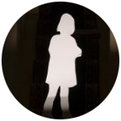

About us
Now in our fourth year, Carlisle Photo Festival continues to offer all photographers opportunities to exhibit in
diverse venues across the city of Carlisle. We hope to challenge ideas about the way contemporary photography can
interact with both its surroundings and audience. In using unusual venues we aim to attract a wider range of the
viewing public and create a buzz in the community.
Meet the team
Gillian Gilbert
Gillian Gilbert comes originally from the North East of England and has lived most of her life within easy distance
of the Roman Wall. Photography was part of family life, a large family with a mother who would spend her last
penny on film for photographs and cine film ; bringing the magic of still and moving image to life. Gilbert uses
both analogue and digital to explore ideas around identity, traces left behind, as well as a sense of place.
Having been involved as a student establishing Carlisle Photo Festival, then as an exhibitor during 2013, she
is now involved in its development and growth for 2014.
gilliangilbert.com
Anna Bridges
Born and raised just outside of Carlisle, I’m a local girl with a passion for the area. It has been a pleasure
to be involved with the Carlisle Photo Festival from its first year, in 2012. I've found it rewarding to watch
the festival grow and see how it provides the area with a cultural boost as well as offering opportunities for
Photographers worldwide.
Linkedin

Julie Dawn Dennis
Julie Dawn Dennis first began taking photographs as a child in the late 1970s using a pocket Kodak camera. A recent
graduate of University of Cumbria, she uses photography to explore personal themes around family and home. She
also photographs in her natural surroundings, often focusing on smaller details to acknowledge the wider world
and question our place in it. Her work utilises various formats according to the project in hand and, where relevant,
she incorporates the variations and imperfections brought by using old equipment or film.
juliedawndennis.co.uk
Eleanor DC Simpson
Being an avid cinephile and passionate about the visual arts Eleanor has been with Carlisle Photo Festival since
the beginning. Originally from North of the Wall she studied at the University of Cumbria where her creative
work won awards, including a major travel grant which took her across a range of UK cinemas and led to the artist's
first solo exhibitions across England and Scotland. While studying she also contributed work to the News &
Star. Now a graduate Eleanor fufils her other interests by working at the movies on a Saturday night.
eleanordcphotography.com